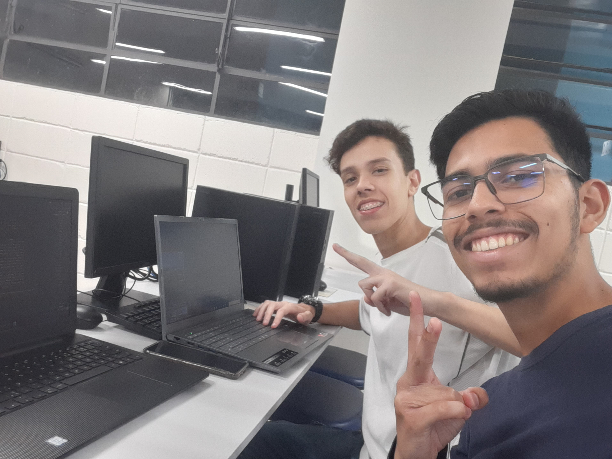

Página de Apresentação

Luan gabriel e Kennedy Lima, estudantes da Faculdade Estácio, cursando o segundo semestre de
Análise e Desenvolvimento de Sistemas.
Fizemos este projeto em HTML, CSS, JavaScript com o intuito de desenvolver nosso aprendizado nestas tecnologias,
nos aperfei√ßoando para o desenvolvimento WEB. Este √© nosso primeiro projeto, espero que goste. üòÑ
O desenvolvimento web é como construir um mundo digital do zero, e cada linha de código que você escreve é um tijolo na construção do seu sucesso. Continue aprendendo, experimentando e evoluindo, pois o horizonte da web está repleto de oportunidades para aqueles que perseveram.
By ChatGPT
Neste site você encontrará uma espécie de guia turístico para as capitais do Brasil (Todas elas).
Um dos primeiros desafios que encontramos foi a questão dos estilos, pois, quando começamos não tinhamos o conhecimento
necessário, confessamos que o ChatGPT nos ajudou bastante, mas óbviamente fizemos quase tudo por conta própria.
O processo criativo foi bem fluido, pensavamos e já aplicavamos, nesta página mesmo você encontrará
uma coisa interessante!